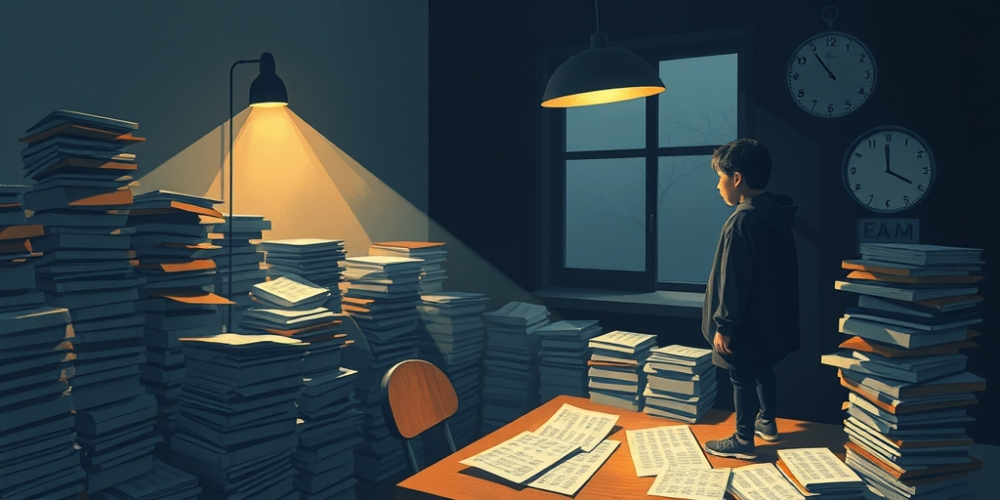
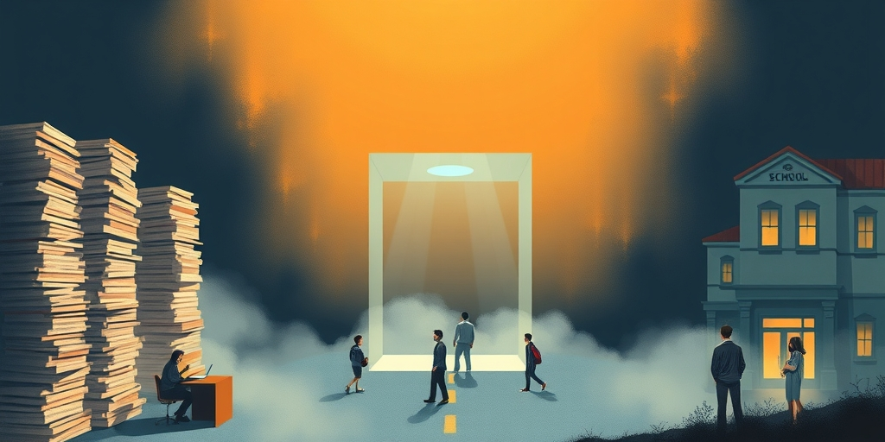
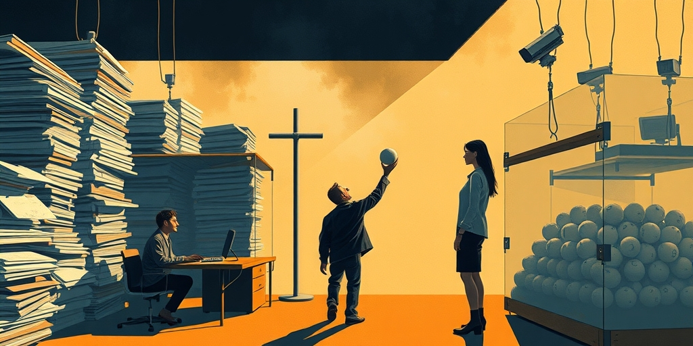

小汪老师的成长洞察 · 属于你的成长专栏
淮安中考满分800，上省重点要744分。每科扣分不能超过个位数。这不是选拔人才，是磨掉一代人的精神和体力储备。合肥从2006年开始做了一场十八年的实验：划一条合理分数线，过了线就摇号。这个实验揭示了一个更大的命题——"过关之后抓阄"，可能是一种被严重低估的社会资源配置方式。

记者：小汪老师，最近中考出分了。江苏淮安，总分800，上省淮中要744分。每科平均扣分不能超过个位数。背后这些家庭付出的精力、金钱、情绪代价，是一个天文数字。有一种声音认为，卷到这个程度，已经不是教育了，是社会摩擦——所有人都在为最后那三五分的差距付出不成比例的代价。你怎么看？
小汪老师：我同意"摩擦"这个词。你看一个经济学的概念——边际成本与边际收益。一个学生从600分提到680分，靠的是基础扎实、掌握方法论。但从730提到744，那十四分靠什么？靠精确到每一个知识点的肌肉记忆、靠反复训练消除一切随机失误的可能性、靠把生活里除学习以外的所有东西都砍掉。
记者：多拿这十四分的代价有多大？
小汪老师：边际成本是前面几十分的好几倍，但它在人才区分上的边际收益几乎为零。一个考730和一个考744的学生，真实的认知能力和未来潜力有本质差别吗？没有。但为了这个"没有"的差别，一个家庭砸进去三年，一个孩子失去了三年青春里所有正常的东西。这不是教育，这是社会资源的巨大浪费。

记者：我注意到你提到了合肥。从2006年开始，合肥把一中、六中、八中三所省重点绑在一起招生——统一志愿、统一分数线，过线之后电脑摇号分学校。这个制度运行了十八年，直到2024年才取消。你怎么看合肥这个实验？
小汪老师：它是中国基础教育界最被低估的一次制度探索。它做的核心动作只有一件事：把竞争的终点从"比别人多考几分"变成了"过一条合理的线"。这个改动看似微小，但把整场游戏的规则从"无限军备竞赛"变成了"有限达标竞争"。
记者：具体释放了什么？
小汪老师：你不需要超越所有其他人，你只需要证明自己达到了一个合理的基准，然后把剩下的交给随机。这带来的心理释放是巨大的——当一个家长知道自己的孩子只要考到一个合理的分数就一定能进好学校，他不需要逼孩子往死里挤那最后几分的牙膏。整个家庭的精力可以被重新分配到体育锻炼、阅读、社交、发展兴趣上。
记者：但反对的声音也很大。有人说摇号不公平——我孩子考了高分，凭什么手气不好就去不了最想去的校区？
小汪老师：这个反对意见背后有一个隐性假设：那几分的差距代表了真实的、不可妥协的"应得"差异。但我们已经讨论过——744分和740分的认知差距几乎为零。你反对摇号时的愤怒，不是因为"这四分配得上更好的教育"，而是因为你习惯了"输赢必须是自己打出来的"，你不接受一个非人力可控的因素介入分配。
记者：你这个说法有点刺人。
小汪老师：好问题，刺人是因为它戳破了一层窗户纸。你想过没有——决定你孩子考744还是740的所有变量里，家庭经济条件、父母教育背景、所在学区、基因天赋，全部都是随机赋予的。你现在觉得摇号不公平，你怎么不觉得投胎也不公平？随机性一直都在这场游戏里，只不过它躲在"努力"这个叙事后面罢了。显性的随机让你不舒服，不是因为它更不公平，而是因为它让你无法维持"一切靠自己"的幻觉。
记者：让我推一步。有一种观点认为合肥这些年产业的突飞猛进——面板、芯片、新能源汽车——某种程度上跟联招制度有关系。因为联招释放了家庭和学生不必在考试上过度消耗的能量，这些能量转化成了创新、创业和产业发展的动力。你觉得这个因果关系成立吗？
小汪老师：我不是合肥市政府，不能拍板说联招直接拉动了GDP。但经济学里面有一个很经典的概念叫"摩擦成本"——社会资源不是只包括钱和土地，还包括人的精力和注意力。
记者：具体怎么传导？
小汪老师：一个地方的成年人在孩子中考这件事上每天多耗两个小时，累计三年，这种消耗看不见，但它会从他们白天的工作效率、晚上的阅读深度、周末的社交质量和创新意愿里扣出来。当一个社会所有人都把注意力弹药打在同一件事上——考试多拿五分——那其他地方自然就缺弹药。联招不是直接创造了产业，它是减少了摩擦损耗，让能量去了它该去的地方。这个传导链条不直接，但真实存在。

记者：那把这个思路推到极致——不光是教育，找工作、考公务员、申请学校，所有拼排名的零和竞争，能不能都用"过关+抓阄"替代？
小汪老师：在特定的环节可以。找工作第一步笔试筛掉不合格的，第二步在合格的人里抽签面试；公务员过了能力底线之后，随机分配而不是让人为一个岗位卷三年；大学录取，过了学术基准后部分名额摇号。这个机制在有些领域已经在用了——美国的H-1B签证抽签就是典型的"过关+抓阄"。
记者：但有一个根本的担忧：随机性能确保公平吗？怎么防止暗箱操作？
小汪老师：这反而是最容易解决的技术问题。最朴素的方式：所有过关的人到现场，当场抽纸条，公开直播，全程摄像。物理随机是最容易验证的公平。比确保一场考试的每一分都绝对公正要容易得多——你不是还得防泄题、防作弊、防改卷偏差吗？随机性在"防作弊"这件事上其实比精确排名更干净。
记者：那什么领域不适合？
小汪老师：关键是判断一个领域现在是"底线未达标"的问题更严重，还是"过度竞争"的问题更严重。前者不适合抓阄——你总不能让还没学会缝合的医学生抽签上手术台。后者非常适合——当竞争的边际社会收益降为零时，把一部分竞争替换为随机，不是为了偷懒，是为了止损。
尾声
这篇文章没有给你一个标准答案，因为它本身就是一个开放问题。但我想留给你一个刺：你抗拒随机，是因为它真的不公平，还是因为它让你无法再对自己说"我的一切都是挣来的"？我们整个社会被训练了几十年，相信输赢必须由自己控制。这种信念在工业时代是对的。但在这个时代，大量领域的竞争已经越过了边际收益归零甚至为负的那条线。你已经在花十倍代价证明自己和别人一样。当显性的随机让我们无法维持"一切靠自己"的幻觉时，维持这种幻觉需要付出的代价，就是淮安家长和孩子正在付出的那些东西。这个问题没有标准答案，但问出来本身就完成了这篇文章。
小汪老师的成长洞察 · 属于你的成长专栏